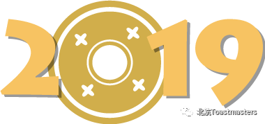
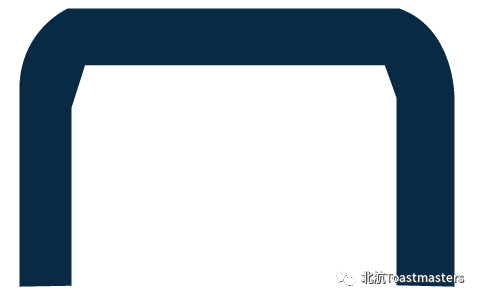

昨晚，北航头马在新主楼B225成功举办了主题为《体验》的会议。回顾一下，会议都有哪些精彩时刻呢？
头
马
每举行一次会议的成功举行，都需要很多角色参与其中。那么，Grammarian（语法官）是做什么的呢？
本次，我们将熟悉一下语法官的职责。先看我们的Jack示范一下：
Grammarian是把2分钟（他超时了，可是这又有什么关系呢？帅就好了）体现到极致的角色之一。成为Grammarian，你将掌握聆听的技巧和描述细节的能力。你的基本任务是对整场会议发言者的语法，用词和发音进行点评。如果你已经可以完成基本任务了，那你已经很棒了！接下来，你可以挑战更高的任务，如：对于整场会议发言者的整体逻辑和语言风格进行点评；使用幽默的语言进行角色介绍和语法官报告；说出自己的主观感受，使语法官报告更个性化。
关于语法官的具体介绍，请点击“阅读原文”获取。关于Jack的联系方式，请直接来参加活动获取！！！
另外，希望每一位担任角色的小伙伴都要提前了解自己的职责，每一个角色都在公众号里有详细介绍，善用哦~
最后恭喜这几位获奖者，你们是最胖的！

视频|Cynthia
文案|Chen